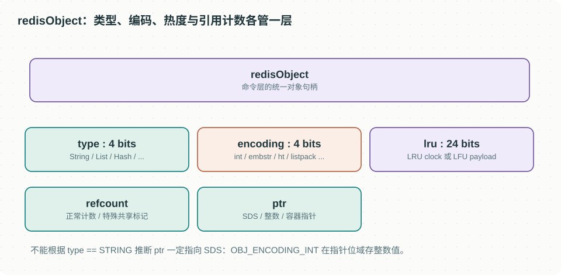
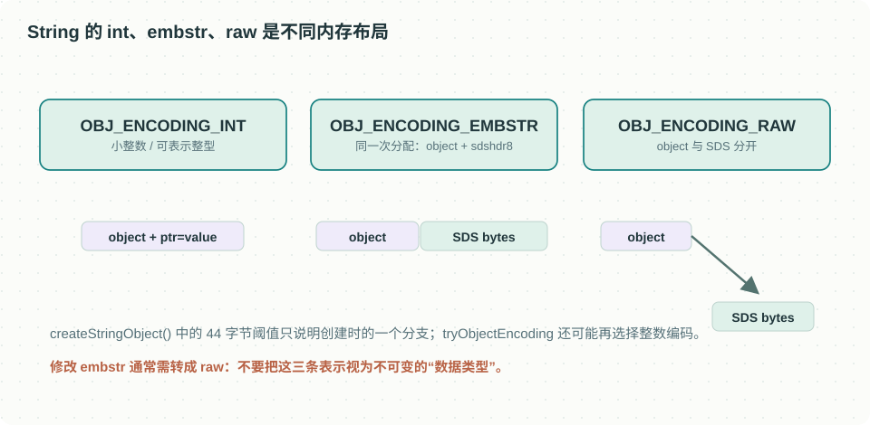
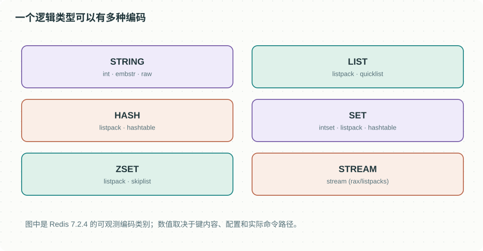

Chapter 08 · Redis 7.2.4 Source Anatomy
redisObject：一层对象头如何选择三种字符串与多种容器
精确拆解 type、encoding、LRU/LFU 位域、引用计数，以及 Redis 7.2.4 的 String/List/Hash/Set/ZSET 编码选择。
为什么同一种 String 要有三种存法？
假设两个键都通过 GET 取出字符串值。第一个存的是 42，第二个存的是长文本。命令层只希望它们都是 String，内部却可以用整数、合并分配的短字符串或分开的长字符串。redisObject 恰好为“逻辑类型”与“内部表示”之间添加了一层抽象，使上层命令无需暴露 allocator 和数据结构细节。
Redis 7.2.4 的对象模型不是“Redis 只有 String/List/Set/ZSet/Hash 五种类型”；服务器还支持 Stream、模块值等。用户命令可通过 TYPE 看见逻辑类型，通过 OBJECT ENCODING 看见内部表示，二者作用不同。

读 server.h：32 位的位域不是全部对象大小
对象头中 type 占 4 位、encoding 占 4 位、lru 占 24 位，合起来构成一个 32 位位域；后面还有 int refcount 与 void *ptr。实际 sizeof(robj) 还受平台、对齐与 ABI 影响，不能拿 32 位就断言整个对象只占 4 字节。
/* Redis 7.2.4 src/server.h：真实字段 */
struct redisObject {
unsigned type:4;
unsigned encoding:4;
unsigned lru:LRU_BITS; /* LRU 或 LFU 负载 */
int refcount;
void *ptr;
};lru 并非永远存储 LRU 时间。启用 LFU 淘汰策略时，Redis 把低 8 位用于计数、较高 16 位用于时间信息；initObjectLRUOrLFU() 根据策略初始化。OBJECT IDLETIME 与 OBJECT FREQ 的可用性因策略而异。
引用计数解决对象何时可以释放的问题。普通对象初始 refcount 为 1；incrRefCount() / decrRefCount() 在持有/释放引用时配对。某些全局共享对象被设置 OBJ_SHARED_REFCOUNT 特殊哨兵值，不能当成一般正整数继续递减。它不是垃圾收集器，也不能凭空防止错误指针的悬垂访问。
int、embstr、raw：同样是 String 的三张内存图

createStringObject() 在 Redis 7.2.4 中有一个明确的短字符串界限：小于等于 OBJ_ENCODING_EMBSTR_SIZE_LIMIT = 44 字节时创建 EMBSTR，否则创建 RAW。这是创建 API 的默认选择，不是说所有低于 44 字节的字符串必须永远 embstr。
命令参数和已写入的值还会经过 tryObjectEncoding() 等编码尝试。某些整数文本可改成 OBJ_ENCODING_INT，这时 ptr 的表示不是 SDS 指针，不能用 (sds)o->ptr 访问字节。需要可修改字符串时，embstr 常常要转成 raw 以便进行重新分配；“同一类型”不代表底层存储可原地修改。
| OBJ_ENCODING | 典型适用条件 | 内存与修改语义 |
|---|---|---|
INT | 合适的整数值 | 将可表示的整数编码进指针字段；不能当 SDS 用 |
EMBSTR | 创建时较短的字符串（44 字节界限） | 对象与 SDS 同一分配块，通常不原地扩容 |
RAW | 较长或需要可变 SDS 的情况 | 对象与 SDS 分离；SDS 可单独 realloc |
不要再画“List 永远 quicklist”的错误表

Redis 7.2.4 的 src/object.c 有 createListListpackObject()、createSetListpackObject()、createHashObject()、createZsetListpackObject() 等函数；t_list.c 还支持 List 在 listpack ↔ quicklist 之间按规则转换。Set 可以为 intset、listpack 或 hashtable；ZSET 的 skiplist 编码实际上还配合字典索引。
老版本遗留的 OBJ_ENCODING_ZIPLIST、OBJ_ENCODING_LINKEDLIST 常量可能仍出现在头文件的兼容定义中，并不证明 Redis 7.2 的新建 List 仍然选择那些旧编码。看到某个宏名存在，不等于它是现代主路径。
从引用计数追踪谁负责释放对象
对象创建函数会分配并赋予初始引用。数据库写入后，键值的持有关系需要配合 incrRefCount/decrRefCount 或所有权转移；对 RAW 字符串释放对象还需要释放其指向的 SDS，而 EMBSTR 的内联 SDS 不能当作一块独立 malloc 的内存单独 free。freeStringObject() 先根据 encoding 决定释放内部存储，随后对象生命周期再结束。
/* 阅读路径建议：按不同分配方式找到对应释放分支 */
createStringObject(...)
-> createEmbeddedStringObject(...) // 共享分配块
-> createRawStringObject(...) // 独立 SDS
tryObjectEncoding(...) // 值可根据内容改成 INT
decrRefCount(...) // 计数到释放边界
-> freeStringObject(...)
-> zfree(object)这份路径是理解关系的简图，不意味着每次命令都按这些函数顺序执行。特别是共享整数字符串或特殊引用计数哨兵，不应误用成普通“计数减一”。
实验：相同 String 类型，编码如何不同
在独立 Redis 7.2.4 实例执行。TYPE 只看到 String；OBJECT ENCODING 展示当前可能不同的内部表示。使用普通非整数短字符串与长字符串来规避对优化整数路径的混淆。
./src/redis-cli -p 6390 SET obj:integer 42
./src/redis-cli -p 6390 SET obj:short small-plain-text
./src/redis-cli -p 6390 SET obj:long "$(printf 'x%.0s' {1..80})"
./src/redis-cli -p 6390 TYPE obj:integer
./src/redis-cli -p 6390 OBJECT ENCODING obj:integer
./src/redis-cli -p 6390 OBJECT ENCODING obj:short
./src/redis-cli -p 6390 OBJECT ENCODING obj:long
./src/redis-cli -p 6390 APPEND obj:short ' + append'
./src/redis-cli -p 6390 OBJECT ENCODING obj:short在常见配置下，整数可能显示 int，短文本显示 embstr，长文本显示 raw；追加后短文本可能变成 raw。若观察结果不同，必须追查参数/对象的创建与 tryObjectEncoding 分支，而不是在文档中伪造固定输出。
对象模型的三条记忆法
第一，逻辑 type 规定命令能对值执行什么操作；第二，encoding 规定值目前如何存放，并不保证永远不变；第三，refcount/lru 提供生命周期与热度元信息，不承担“数据结构内在排序”的职责。
当你再读 SET、HSET 和 LPUSH 时，先查对象 type 与编码，再看具体函数选择哪个数据结构操作分支。下一章会把这条思路接到真正的命令执行。
固定版本参考
源码锚定 Redis 7.2.4。随版本与配置变化的行为必须用对应二进制单独验证；下文的教学图不等于所有异常路径的完整调用图。